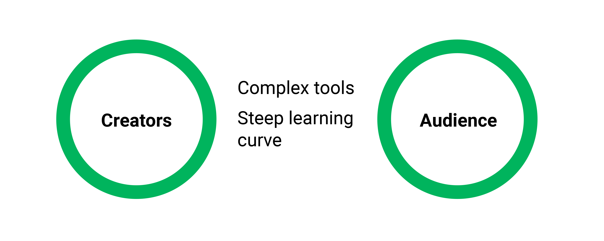
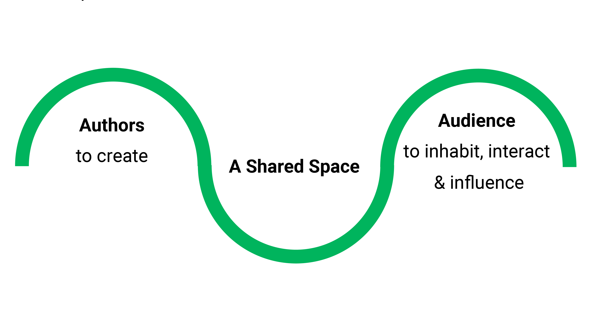

{{ page.description|markdownify }}
How do we leverage the power of VR in order to being an audience and creator together in a meaningfull way, that is accessible to all demographics?
Americans have tried VR
Online Americans aged 18 and up express a desire to try the technology
Google Cardboards shipped within 1.5 years post-June 2014 launch
VR applications downloaded over same period from Google Play
We created TVRN with the idea of allowing artists a custom VR space to showcase and talk about their work. The accessibility that VR allows will elevate the experience of viewing, selling, and showcasing artwork. Through TVRN, we are working on making art accessible across the globe, as well as providing artists a new type of venue to showcase their work.
Newly-introduced web standards have brought high-performance, social Virtual Reality to the open web.
Compatible across mobile browsers and the gateway to mass adoption of virtual reality. Any smartphone user with a Google Cardboard or HMD owner can experience Virtual Reality simply by visiting www.tvrn.me
A web standard for peer-to-peer real-time communication and a web-based replacement for VoIP and video streaming. Used for real time voice communication between users.
Accelerates development by abstracting the need for building our own backend. Used for broadcasting avatar information so users can see and interact directly with each other.
Immersion in VR is 10% a technology problem and 90% a design problem. The TVRN platform is meant to make presentations feel real - to give the user and presenter the feeling that they're really in this together.
Will be available Dec 2016. Please follow our progress at TVRN.me